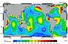

amphidromic

Definition: An amphidromic point, also called a tidal node, is a geographical location which has zero tidal amplitude for one harmonic constituent of the tide. The tidal range (the peak-to-peak amplitude, or the height difference between high tide and low tide) for that harmonic constituent increases with distance from this point, though not uniformly. As such, the concept of amphidromic points is crucial to understanding tidal behaviour. The term derives from the Greek words amphi ("around") and dromos ("running"), referring to the rotary tides which circulate around amphidromic points. It was first discovered by William Whewell, who extrapolated the cotidal lines from the coast of the North Sea and found that the lines must meet at some point.
Source: Wikipedia
Wikipedia Page (Something wrong with this association? Let us know.)
Wikidata Page (Something wrong with this association? Let us know.)